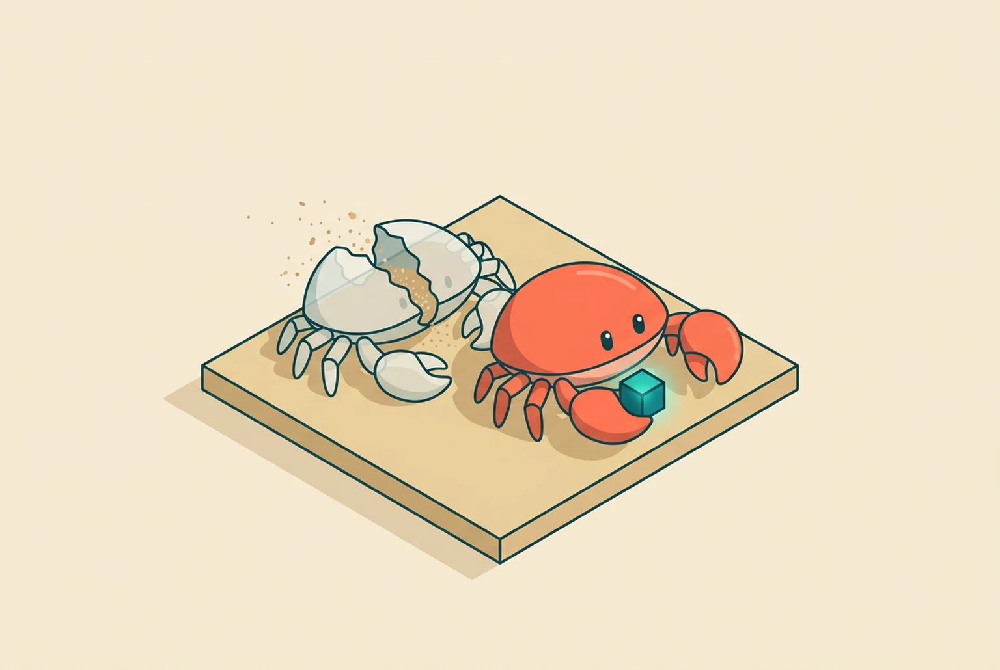

01 · Ephemeral sandbox
Molting
What it meansEvery agent turn runs in a fresh sandbox (microVM or hardened container). On teardown the whole thing is discarded: processes, scratch files, memory. Only what was written into a mounted workspace survives.
3D translation
- Crab: rounded dome (squashed sphere) + capsule legs + sphere claws, coral matte clay.
- Husk: same mesh, frosted translucent white (transmission ~0.6, roughness 0.4), split seam along the back.
- Loop (4 s): crab steps out → husk cracks → dissolves into instanced sand particles drifting left → fresh husk re-forms around the crab for the next turn.
assets/crab/molting.webp assets/crab/svg/molting.svg